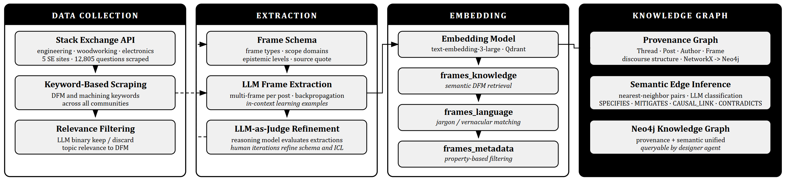
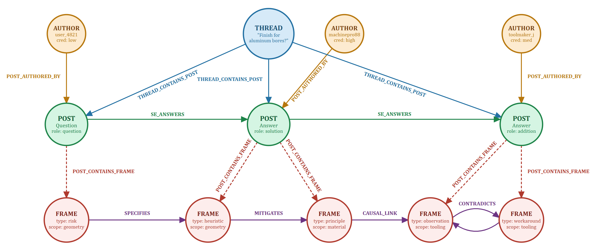
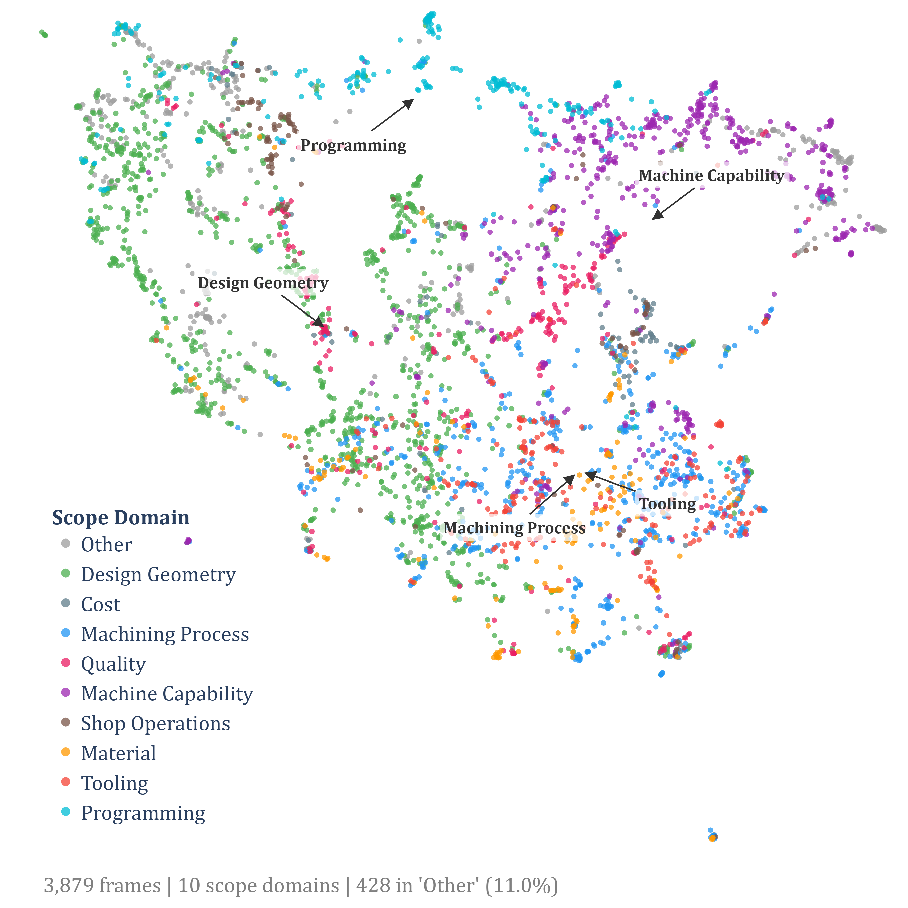
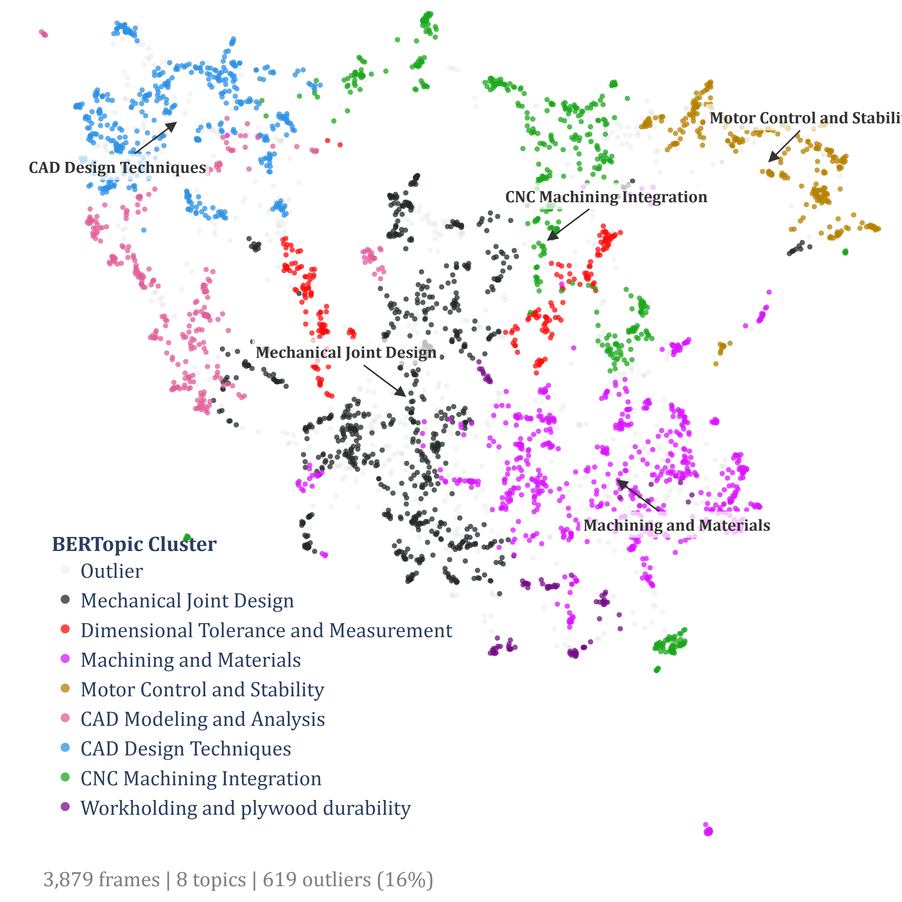
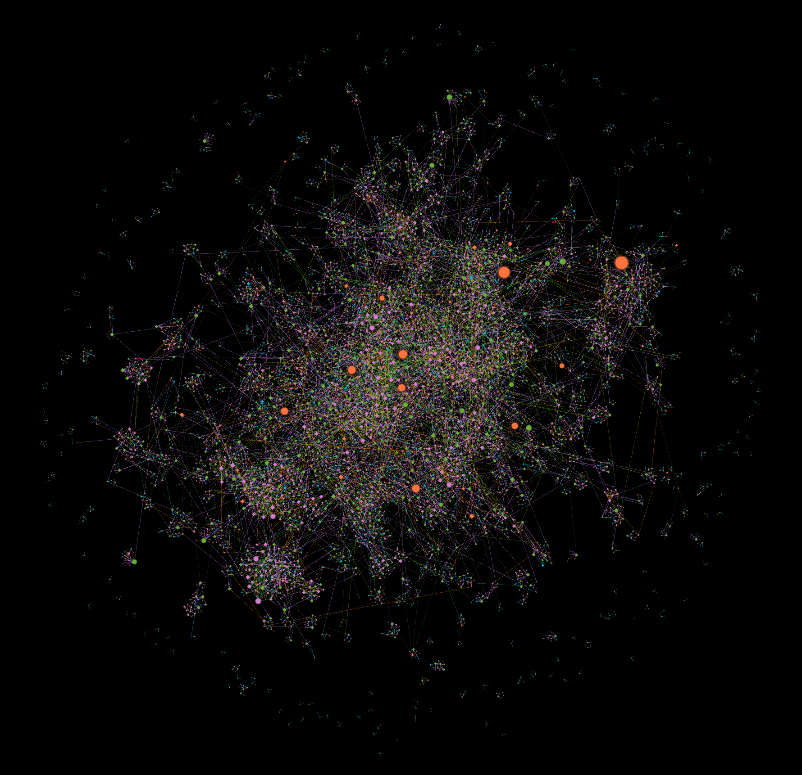
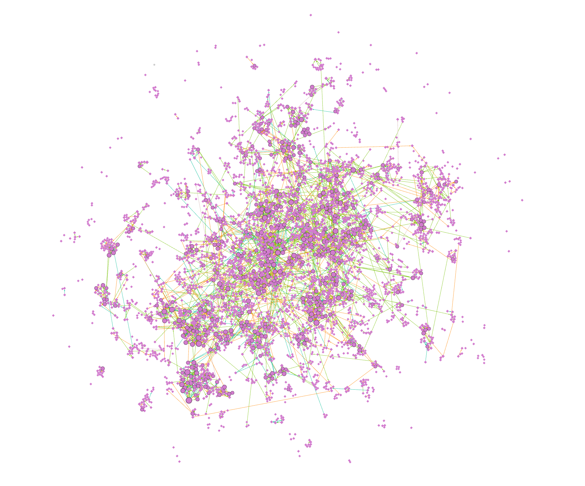

Implementing design for manufacturingDesign for Manufacturing (DFM): designing a part so it can actually be manufactured efficiently — accounting for machining constraints, material limits, tolerances, and assembly feasibility at the design stage. in the early stages of product development can have significant effects on timeline and budget, but can be a difficult undertaking. Current approaches to automating rule-based feedback using large language modelsLarge Language Model (LLM): a neural network trained on vast amounts of text that can generate and reason about language. Examples include GPT-5 and Claude. (LLMs) and machine learning do not adequately capture the complex manufacturing context around a product.
A large part of the knowledge and experience used in giving manufacturability feedback is either tacitTacit knowledge: knowledge gained through experience that is difficult to write down formally. Polanyi's phrase: "we know more than we can tell." or lacking in structured documentation. This makes it difficult for designers to access this knowledge when seeking to consider manufacturability. This also presents a challenge for AI-in-design interventions, as there lacks an accurate way for AI models to access and reason with this tacit knowledge.
Thus, we present a knowledge extraction method that enables AI to better augment early-stage concept design. Using post data from machining forums, we capture the tacit knowledge and experiences communicated by machinists and engineers, structuring it into a scalable knowledge base. The base consists of a multi-vector embedded spaceMulti-vector embedded space: each piece of knowledge is represented by several numerical vectors, one per facet (content, style, metadata). Similar vectors cluster together, enabling semantic search along each facet separately. and a 3,879-node knowledge graphKnowledge graph: a network where concepts are nodes and labelled edges carry meaning (e.g., causes, contradicts, specifies) — enabling machine reasoning over relationships, not just keyword matching..
The quality of the extracted knowledge is validated using automated LLM verification calibrated by human expert review. This contributes a unique dataset on machining discourse and tacit knowledge, while demonstrating a method for transforming unstructured natural language data into useful design for manufacturing insights. These contributions enable AI to function as an extradisciplinary sensemaker that expands the designer's capacity to account for external constraints.
In mechanical product design, accounting for manufacturing constraints is an essential part of the design process and has significant impacts on the later stages of product development. Design-for-manufacturing (DFM) is complex, and requires expert-level manufacturing knowledge that can be difficult or inefficient for designers to learn and access. This paper explores how DFM expertise can be extracted from unstructured natural language data and structured into a machine-readable knowledge base. This knowledge base can help future AI systems give more accurate and thorough design feedback grounded in concrete human expertise. We then test this knowledge base through an agentic DFM feedback workflow.
A large part of a product's lifecycle cost is committed during the early design stage[1]Ehrlenspiel, Kiewert & Lindemann (2007). Cost-Efficient Design. ASME Press / Springer.[2]Boothroyd, Dewhurst & Knight (1994). Product Design for Manufacture and Assembly. Marcel Dekker., and late-stage rebuilds risk overextending project timelines[3]Chang, Wysk & Wang (2006). Computer-Aided Manufacturing (3rd ed.). Prentice Hall.. The concept generation and selection processes that occur in early-stage mechanical design could benefit from greater manufacturability awareness, but early-stage DFM remains difficult[4]O'Driscoll (2002). Design for Manufacture. J. Materials Processing Technology, 122(2–3).[5]Gupta, Regli, Das & Nau (1997). Automated Manufacturability Analysis: A Survey. Research in Engineering Design, 9(3).. The rule-based geometric constraints common in most forms of DFM do not adequately capture the numerous considerations needed to design a manufacturable part.
Common examples of rule-based DFM heuristics include automated checking of problematic features like deep pockets, thin walls and small fillets. Digital tools like Siemens NX Checkmate, DFMPro and CoLab perform DFM analysis of CAD designs. These tools use geometry rules, historical quoting data, and supplier databases to evaluate a part's manufacturability.
The heuristics used by digital DFM platforms guard against common mechanical design pitfalls, but a large part of DFM failures remain unaddressed[5]Gupta et al. (1997). Automated Manufacturability Analysis.[6]Formentini, Rodriguez & Favi (2022). DfMA in the Product Development Process. Int. J. Adv. Manuf. Technology, 120.. Examples of these include failures caused by limitations in manufacturer capability, context-dependent process constraints, and assembly-level conflicts. Failures like these cannot simply be addressed with the available tools and processes[5]Gupta et al. (1997).[4]O'Driscoll (2002).. Many unsolved DFM roadblocks trace back to the tacit nature of manufacturing expertise. Machining is a clear example: seasoned practitioners hold deep experiential knowledge that is either undocumented or entirely tacit[7]Nonaka & Takeuchi (1995). The Knowledge-Creating Company. Oxford University Press.[8]Sun, Huang, Jiang, Lu & Yang (2024). On Tacit Knowledge Management in Product Design. J. Engineering Design, 35(1).. This tacit and experiential knowledge plays a crucial role in the thought process behind manufacturability feedback, but is difficult for designers to know during early-stage design. Structuring tacit and experiential knowledge for digital communication is also challenging. While researching DFM, this paper focuses on machining as a subdiscipline due to its prevalence in multiple industries and the significant amount of unmapped expertise held by seasoned practitioners[9]Deloitte & The Manufacturing Institute (2024). Creating Pathways for Tomorrow's Workforce Today..
Current DFM research focuses on the automation of geometric assessment using computational tools and AI integrations[6]Formentini et al. (2022).[4]O'Driscoll (2002).. This can accelerate formal heuristics implementation, but is not effective for involving nuanced context-dependent information — manufacturer capabilities, equipment, and past experiences — that varies across organizations, settings and times. This information is essential for DFM and often drives design feedback that requires costly rebuilds. For manufacturers, communicating their requirements and constraints to designers early or clearly enough remains difficult because their feedback depends on tacit and context-dependent information and knowledge. Thus, there exists a need to capture experiential and tacit knowledge in an efficient manner.
There is also an opportunity to explore how to structure this knowledge for future AI-in-design interventions. Currently, AI tools like large language models (LLMs), vision language models (VLMs), and reasoning agents have demonstrated capability in providing feedback, performing research, and generating ideas in the design process. By making expert knowledge machine-readable, we can cultivate the expertise and contextual awareness of an AI model for DFM interventions to be more reliably accurate.
Research questions
We explore the overarching topic: In what ways can knowledge graphs capture experiential knowledge in design and manufacturing from discourse and conversation data? In parallel, we focus on the following research questions:
- RQ1. What types of knowledge do technical practitioners communicate in online forums?
- RQ2. What types of knowledge and discourse can be captured in a machine-readable format using knowledge graphs and embedding spaces?
- RQ3. How can subjective semantic review be automated using large language models (LLMs)?
To address these questions, we develop a multi-vector embedded space and a knowledge graph constructed from a corpus of design and machining forum posts. Online technical forums have been shown to be high-quality repositories of expert knowledge[10]Mamykina, Manoim, Mittal, Hripcsak & Hartmann (2011). Design Lessons from the Fastest Q&A Site in the West. CHI '11.[8]Sun et al. (2024)., containing discourse with valuable practical insights that are not always captured in traditional textbooks. With the forum post data, we demonstrate a process for extracting specific pieces of knowledge from unstructured natural language, referred to as framesKnowledge frame: a structured, machine-readable unit of knowledge — drawing on Minsky's frame representation paradigm. Each frame has a main point, source quote, type, scope, applicability, and metadata fields. in this paper — drawing on Minsky's frame representation paradigm[11]Minsky (1975). A Framework for Representing Knowledge, in The Psychology of Computer Vision, ed. Winston. McGraw-Hill.. An automated review process calibrated on human expert feedback is used to verify the accuracy and utility of the frames, and an agentic application case study demonstrates the broader applications.
This section describes a four-stage pipeline for transforming unstructured online forum discourse into a structured, machine-queryable DFM knowledge base: (1) data collection and filtering, (2) knowledge frame extraction, (3) multi-vector embedding, and (4) knowledge graph construction. The pipeline, shown below, preserves the nuance of forum discourse while producing structured knowledge representations that an AI agent can reason over, in real time, during design tasks.

Data collection and filtering
To collect the data, we scraped forum threads from Stack ExchangeStack Exchange: a network of question-and-answer websites including Stack Overflow, Engineering, Electronics, Robotics, and others. Public posts are licensed under Creative Commons Attribution–ShareAlike (CC BY-SA 4.0).. Online forums have been shown to contain useful practitioner knowledge, with experienced users answering the majority of posted questions. The conversational nature of forums allows for more nuanced and context-dependent knowledge to be shared[38]Panahi, Watson & Partridge (2013). Towards Tacit Knowledge Sharing Over Social Web Tools. J. Knowledge Management, 17(3).[39]Arab, LaToza, Liang & Ko (2022). An Exploratory Study of Sharing Strategic Programming Knowledge. CHI 2022.. Forum data was collected via the Stack Exchange API under the platform's Creative Commons Attribution–ShareAlike (CC BY-SA 4.0) license, which permits reuse with attribution. No private or user-identifying information was collected beyond publicly displayed usernames and reputation scores.
Since there are a wide variety of conversations held on Stack Exchange, we developed a system to find the most relevant discussion threads. To capture both design-oriented posts and machining-process posts with potential design implications, a list of approximately 20 keywords was developed spanning two complementary categories: keywords describing design decisions and constraints, and keywords describing machining problems or failure modes.
We ran searches with these keywords across five different Stack Exchange sites: Engineering, Mechanics, Woodworking, Electronics, and Robotics. With the Stack Exchange API, we scraped 12,805 raw threads, each containing multiple posts. Using GPT-5-mini as a relevance filter, we removed questions that lacked relevant content, such as off-topic or non-technical discussion, and distilled the dataset to 1,936 posts.
Knowledge frame extraction
To create the knowledge base, we developed a framework for extracting knowledge from the forum data. Raw forum posts have valuable lessons and insight, but in a format that is difficult for a machine to reason with. There is informal language, narrative structure, implicit assumptions, and high-context claims.
To take advantage of this richness in discourse, we introduce the concept of a knowledge frame — drawing on Minsky's frame representation paradigm[11]Minsky (1975). A Framework for Representing Knowledge. — defined as one distinct unit of design or manufacturing knowledge that is extracted from a post by an LLM with reasoning capabilities. Each post often contains knowledge from which multiple different frames can be extracted. For example, a machinist recounting a story of a build failure could include universal lessons, case-based observations, and clever workarounds in one post.

A 23-field schema was developed for each frame. We developed the schema iteratively based on existing research on structuring knowledge[40]Fillmore (1982). Frame Semantics, in Linguistics in the Morning Calm. Hanshin.[41]Hyland (1998). Hedging in Scientific Research Articles. John Benjamins.[42]Toulmin (1958). The Uses of Argument. Cambridge University Press., with a focus on preserving nuance by separating the different semantic qualities of each knowledge claim. The schema served to both constrain the LLM's extraction output and structure the required metadata for future analysis. The fields were intentionally structured to capture various knowledge facets.
The frame_type classifies what type of claim the frame is making, while the post_role classifies the post's main purpose in the discussion and the epistemic_stanceEpistemic stance: how confidently a claim is stated — ranging from absolute_authoritative, direct_neutral, and hedged_emphatic through tentative_subjective to narrative_implied. classifies how the post author views the claim being made. These fields help the LLM classify the frame and guide the main_point field, which captures the crux of the frame. The scope, subject, and applicability fields force the LLM to specify where the frame is useful. To force a separation between hypothetical values and discrete heuristics, the example_value and example_context fields have targeted prompts. Finally, the extraction_rationale contains any extra reasoning for the LLM to explain a potentially confusing frame classification.
When prompting the LLM, we used a few-shot approach, embedding examples for each schema field individually. Our prompt encouraged the LLM to extract multiple frames per post to prevent the LLM from collapsing a multi-faceted statement into only a single frame. After this, there was a multi-part filtering step.
The first filtering step used few-shot prompting to check the epistemic_stance field. This field is particularly important for categorizing the credibility and nature of the frame, and additional steps were required to ensure that the nuance of implicit communication was accurately captured. The second filtering step analyzed the source_quote field to determine whether duplicate frames were extracted. Any frames with similar quote citations were reanalyzed, with the LLM deciding whether to merge the frames, keep both frames, or delete one of them. Any frames with inaccurate source_quotes were deleted, and if a post was flagged for relevant content but no frames were extracted, the system was instructed to retry extraction.
Before using the schema for full frame extraction, we iterated on the schema and extraction scripts. Out of a total 192 iterations, there were 56 human iterations and 136 LLM iterations on the code set. For the human iterations, we manually reviewed the extraction results from a set of diverse test frames. Based on the results, we adjusted the schema and extraction script to better capture the knowledge in the post. For the LLM iterations, we applied LLM-as-a-judge evaluation methods for each iteration. We used GPT-5 to assess the schema and extraction script alongside the post and its extractions, and instructed it to make direct, surgical changes to the scripts before iterating again.
The LLM-as-a-judge iteration involved in-context learning (ICL) based on gold-standard examples, which helped schema convergence. After converging on a schema that could successfully extract frames from posts in multiple different design or manufacturing disciplines, we executed the full extraction. Out of the 1,936 posts, 1,203 posts had relevant content and 3,879 frames were extracted, with an average of 3.22 frames per post.
Validation
To ensure quality of frames, we used an automated LLM pipeline to review the frames' quality and revise them as necessary. Following the methods discussed in Section iii, we conducted human review of the frames, with three engineering experts reviewing 26 randomly sampled frames. The frames were reviewed for multiple metrics, including clarity, accuracy, and applicability. The reviewers also rated how tacit the extracted knowledge was, which is inversely related to how easily the knowledge could be found through simply reading a textbook. Each of the 26 frames was given 9 quantitative ratings and one qualitative rating (keep / revise / remove). Given the complex context of each frame and its rating, fewer frames were selected to minimize reviewer fatigue and meet scheduling constraints. Each reviewer made 244 qualitative ratings.
Once this gold standard was established, we created a rubric-based prompting structure to have GPT-5 review each frame and apply the qualitative rating. This forced the LLM to decompose the evaluation into discrete criteria. Using the gold standard, we implemented in-context learning. Once each frame had a rating, the next prompting script executed each command, revising and removing the required frames. This separation of the judgement and generation steps in the LLM aligns with recommendations from existing research[22]Zheng et al. (2023).[26]Li et al. (2024).. Since reviewing natural language knowledge extraction data is a subjective task, especially for tacit knowledge, we focused on the overall levels of harshness exhibited by the human reviews. Harsher reviews required more textbook-like and universal principles, and lenient reviews were more flexible with anecdotal and context-specific insights. Using the human review data, we calibrated the LLM's harshness and grading habits to match that of the experts.
Multi-vector embedding
Once the frames were extracted, a 3-vector embedded spaceEmbedding: a numerical vector that represents the semantic meaning of text. Similar texts produce vectors that are close together in the embedding space, enabling similarity search that does not rely on exact keywords. was constructed using OpenAI's text-embedding-3-large model (3,072 dimensions). The first vector embeds the extracted knowledge content, pulling from the subject, main point, example context, example value and thread context. This supports semantic retrieval for DFM knowledge and advice, enabling the most relevant knowledge to be found, independent of how it was communicated by the author of the original post. The second vector was based entirely on the source quote, to capture the semantic meaning of the natural language used by the author based on linguistic similarity. This helps with queries phrased with jargon or informal speech. The third vector is an auxiliary metadata vector, based on the metadata rendered as natural language which includes: frame_type, scope, epistemic_stance, and post_role. This supports property-based querying of frames, especially queries based on knowledge type.
A script that supports single-vector and multi-vector search was built and used to test this embedded space. Alongside this, we used topic modeling with BERTopicBERTopic: a topic-modeling tool that uses contextual embeddings and clustering to discover recurring themes in unstructured text — no need to predefine the number of topics.[43]Grootendorst (2022). BERTopic: Neural Topic Modeling with a Class-Based TF-IDF Procedure. to surface overarching themes and recurring subjects from the data. Using the existing embedding space, we used a UMAPUMAP (Uniform Manifold Approximation and Projection): a technique for projecting high-dimensional data into a lower-dimensional space (often 2D) for visualization and clustering, preserving both local and global structure.[44]McInnes, Healy & Melville (2018). UMAP: Uniform Manifold Approximation and Projection for Dimension Reduction. reduction to reduce the 3,072-dimension vector space to 5 dimensions, with n_neighbors = 15. In this 5-dimension space, we used HDBSCANHDBSCAN: Hierarchical Density-Based Spatial Clustering of Applications with Noise. A density-based clustering algorithm that groups points into clusters without requiring the number of clusters to be specified in advance.[45]McInnes, Healy & Astels (2017). hdbscan: Hierarchical Density Based Clustering. JOSS, 2(11). to find 319 topic clusters based on density. These topics were reduced to 39 larger clusters using BERTopic's hierarchical topic reduction. For easier visualization, these 39 topics were grouped into 8 high-level groups. These groupings could then be compared with the predetermined scope definitions set for the frames for further analysis.
Knowledge graph construction
Finally, a knowledge graph was constructed to capture the structure of the online discourse and the semantic relations between related frames. At first, we built a provenance graphProvenance graph: a graph that tracks where each piece of data came from — which post, thread, and author — so any claim can be traced back to its source. with AUTHOR, THREAD, POST and FRAME as node types, and THREAD_CONTAINS_POST, POST_AUTHORED_BY, POST_CONTAINS_FRAME, and SE_ANSWERS as edge types. This part of the graph captures the discourse structure and shows human connections between different threads.
To construct the semantic portion of the graph, we found the top 5 nearest neighbors of each frame in the embedded space (based on all 3 vectors). For each unique pair found, GPT-5 inferred semantic relationships between the frames that had relevant content[14]Pan et al. (2024).:
One frame adds detail or constraints to another.
One frame (typically a heuristic or workaround) addresses a risk described in another.
Two frames share a cause–effect relationship.
Two frames present conflicting claims.
Unrelated node pairs had no edge drawn. This inference process added another 4,372 semantic edges. All nodes and edges were merged into a unified Neo4jNeo4j: a graph database that stores nodes and edges natively, enabling fast traversal of relationship-heavy data. knowledge graph.
This section presents the results of the knowledge extraction process, both through quantitative metrics and qualitative discussion. We first discuss the data validation results. This is followed by a discussion of the metadata, primary data outputs, and opportunities for future work.
collected
retained
extracted
authors
nodes
edges
Dataset characteristics
To address RQ1, we examine the distribution of knowledge types across the extracted frames. Across the different frame types and topics, the vast majority of the frames were heuristic (1,401/3,879) and observation (1,345/3,879). This aligns with the typical function of forum posts, in which users focus on providing advice, solving problems, or identifying relevant information[10]Mamykina et al. (2011).. By predetermined scope, the largest category was design geometry, which confirms the large presence of useful design information in engineering forums. Besides the "other" category, machining process and machine capability were the second and third largest categories, respectively. Full details of the frame metadata distributions are provided in Appendix A.
Our first output from this frame dataset was a multi-vector embedded space. The UMAP visualization, shown below, demonstrates the difference between the predetermined and clustered topic models. The clustered topics show a clearer distinction along zones of semantic similarity, while the predetermined topics are more intermixed. The predetermined topics, while an example of common fields of consideration in DFM, do not effectively organize the discussion threads and frames as the topic clusters do. An example of this is the tooling and machining process topics, whose centroids on the graph are relatively close. This pattern is understandable, as manufacturing problems and solutions often involve multiple subdisciplines. The clustered topics focus more on specific activities or skills, which differs from the predetermined topics' emphasis on areas of analysis. While textbooks and reports may organize information more similarly to the predetermined topics, an adaptive classification approach is better for organization when looking at unstructured data.


Our second output was a knowledge graph, fully visualized in Appendix A. This contains the full structure of both the forum discourse and the semantic connections between frames. The majority of the nodes in the graph are connected, but there are several isolated groups of nodes with no connections to the central cluster. These signify discussions that are within the discipline of design for machining, but are not connected to the larger body of discussion. This illustrates the diverse nature of forum posts, where multiple unrelated discussions about similar topics are hosted on the same platform. The benefit of combining the knowledge graph with the embedded space is that, even if the user navigates a smaller, disconnected cluster, they can still search a wider area in the embedded space. This also works with AI agents, which can traverse the graph and the embedded space to retrieve the most relevant knowledge.
These results address RQ2: the combination of multi-vector embedding and a semantic knowledge graph preserves both the topical content and the relational structure of forum discourse. The three embedding vectors capture different facets (knowledge content, linguistic style, metadata), while the four semantic edge types (SPECIFIES, MITIGATES, CAUSAL_LINK, CONTRADICTS) encode reasoning relationships that flat text storage would lose.


Knowledge frame validation
The human review statistics of the 26 unrevised, random-sampled frames are presented below. Due to the subjectivity of rating extracted knowledge, the inter-rater reliabilityInter-rater reliability (IRR): a measure of how much multiple independent reviewers agree when rating the same items. (IRR) varied between metrics. This is understandable, as each human rater approached the same knowledge from a different subjective paradigm on design and manufacturing. However, the average scores on quality, clarity, and accuracy demonstrate the utility of the presented knowledge extraction strategy. Despite disagreements on the specific qualities that made the knowledge useful, the ratings show that each reviewer believed the knowledge was useful overall.
For each of the 26 frames, there were ten qualitative ratings given by the reviewers. The metrics on extraction accuracy, clarity, and main point quality focus on the overall validity of the frame; these metrics were used to assess the frames' IRR. The metrics on scope, post role, epistemic stance, and applicability provide insight on the LLM's agreement with humans in classifying natural language data. In addition to this insight, these metadata metrics were used to calibrate the automated frame review and revision pipeline. Each of these metrics contained "poor," "acceptable," and "good" tiers. The tacit knowledge rating asked users to classify whether the knowledge communicated in the claim could be found in a traditional textbook. After the first 9 qualitative ratings, the final rating for each frame asked the reviewers to recommend keeping, revising or removing each frame.
In analyzing the IRR of this grading scheme, we used Gwet's AC1Gwet's AC1: a statistical measure of agreement between raters. Unlike Cohen's kappa, it remains stable when most ratings fall into one category — avoiding the kappa paradox.[46]Gwet (2008). Computing Inter-Rater Reliability and Its Variance in the Presence of High Agreement. British J. Math. Stat. Psychology, 61(1). to measure agreement in place of the alpha and kappa metrics used in past papers. Because of the vast majority of ratings being in the "good" category, the kappa and alpha ratings understate agreement — a well-documented statistical artifact known as the kappa paradoxKappa paradox: a statistical artifact where Cohen's kappa reports near-zero or even negative agreement even when raters actually agree on almost everything — caused by uneven prevalence across rating categories.[47]Feinstein & Cicchetti (1990). High Agreement but Low Kappa: I. The Problems of Two Paradoxes. J. Clinical Epidemiology, 43(6).. The perceived randomness of agreement in a rating where one category dominates makes the high agreement of this data seem by chance. For example, since 83–100% of ratings were viewed as "good," the 96% exact agreement on main point quality is actually shown as negative by the Fleiss kappa rating. However, the only way to get a higher rating for that measurement would have been perfect agreement. The three ratings used to measure frame quality had high agreement and high average quality ratings:
| Dimension | Good | Accept | Unsat | Agree | AC1 |
|---|---|---|---|---|---|
| Extraction accuracy | 92% | 8% | 0% | 84% | 0.840 |
| Clarity | 92% | 6% | 1% | 85% | 0.846 |
| Main point quality | 99% | 1% | 0% | 96% | 0.962 |
Overall, the majority of the frames were rated highly, with a high percentage agreement and AC1 metrics. The keep / revise / remove ratings were also favorable, with 0 out of 26 frames being voted for removal, and 5 frames being recommended for revision. Of the "revise" rated frames, the primary reasons were lack in clarity, and disagreements about metadata. When extracting frames, the LLM had the freedom to reference information from the overall post or original thread question, but was instructed only to reference specific quotes. After reviewing each of the "revise" rated frames criticized for clarity, we noticed that each of the frames were accurate, but referenced data outside the quoted post excerpt.
The metadata ratings were more contested, with lower agreement and average ratings. There was significant disagreement among reviewers on the accuracy of each metadata metric, showing the subjectivity of the classification method. While these metadata fields are not essential to the dataset, they can provide a helpful way to search and organize the frames. This insight informed our structuring of the dataset in the case study discussed below.
| Dimension | Good | Accept | Unsat | Agree | AC1 |
|---|---|---|---|---|---|
| Scope | 90% | 9% | 1% | 81% | 0.808 |
| Post role | 88% | 8% | 4% | 73% | 0.712 |
| Epistemic stance | 88% | 5% | 6% | 69% | 0.673 |
| Applicability | 86% | 10% | 4% | 58% | 0.577 |
| Frame type | 77% | 18% | 5% | 50% | 0.500 |
The tacit knowledge rating showed an average of 71% of frames to contain tacit or expert-level knowledge, with strong disagreement among reviewers about which frames were truly non-textbook. This confirms the nature of tacit and expert-level engineering knowledge — the perception and possession of it changes across different experts and sources[7]Nonaka & Takeuchi (1995).[8]Sun et al. (2024).. The tacit knowledge rating also showed that, while a significant portion of the extracted knowledge was tacit, there is still a strong presence of textbook information communicated in the forums.
Overall, the LLM was more conservative on content and tacit knowledge rating, but more generous on the metadata ratings. In general, we found that the LLM was a harsher critic of the quality of knowledge extracted. The LLM only found more agreement with human ratings once the gold standard demonstrating the tacit knowledge's usefulness was implemented. This produces an insight that LLMs might naturally discount tacit and experiential knowledge in favor of more structured or formal knowledge[24]Chen et al. (2024).[23]Szymanski et al. (2024).. Similarly, the lower tacit_knowledge rating given by the LLM shows that it tends to default to textbook knowledge for concepts that human reviewers might view as more tacit.
The expert review of the frames provided helpful calibration for the automated LLM rating and revision pipeline. Of the 3,879 frames reviewed, 20% were marked for revision, with only 3 frames marked for removal. To address RQ3, we find that automated LLM review is feasible for frame quality assessment (AC1 ≥ 0.84 on quality metrics) but requires human calibration for subjective dimensions like tacit knowledge classification. In total, the knowledge extraction process resulted in 3,879 frames, which created a corresponding embedded space and semantic knowledge graph with 4,372 semantic edges. The total graph with both semantic connections and discourse provenance contained 7,864 nodes and 13,148 edges.
Case study: agentic retrieval
To demonstrate the usefulness of this knowledge, we use the frame embeddings in a retrieval system. By constructing an agentic retrieval-augmented generationRetrieval-Augmented Generation (RAG): a technique where a language model retrieves relevant external documents before answering, grounding its output in source material rather than relying only on its training data. (RAG) system[13]Lewis et al. (2020)., we enable a more concrete connection between design advice and experiential commentary. In response to design queries, this agent retrieves vectors, traverses the knowledge graph, synthesizes a response, and identifies gaps in the knowledge base.
When making a query, the user can adjust three parameters to adjust the scope of knowledge retrieval: N, M, and Q. With every query, the model retrieves the N nearest frames, retrieves any semantically connected nodes within M degrees of removal, and down-selects to Q total frames. Based on these frames, it synthesizes a query response, detailed in Table 3, and identifies gaps where the available frames do not provide coverage. The model defaults to a concise response, only listing the reference frame IDs, but the user can easily access details on the frame citations.
If the user doubts the advice, they can request the context of the discourse behind the frames. In response to this query, the model accesses the provenance graph, and retrieves the structure of the discussions behind each frame, including the author names, author credibility scores, and complete thread content for each of the frames used as evidence. The agent then uses this data to provide a summary of the existing context.
If the user requires information not covered in the available frames, they can request for the model to backfill the identified knowledge gaps with information from textbooks or official standard codes. This application demonstrates that datasets like this can augment the existing capabilities of language models to search for information with specific data on a complex discipline[14]Pan et al. (2024).[48]Gao et al. (2025). Leveraging Medical Knowledge Graphs Into Large Language Models for Diagnosis Prediction. JMIR AI, 4.. When compared to a typical LLM response to the same design question, this agent provides a more detailed and grounded response, where there is a clear human link to each response provided. Furthermore, the textbook answers being incorporated into the knowledge gaps enable a comprehensive response. Using agentic retrieval, the best aspects of both general LLM searches and specific graph queries can be combined to provide useful insight. More details on the agent's reasoning process and output can be found in Appendix B.
| Section | Description |
|---|---|
| Summary | Concise overview of DFM advice from all retrieved frames. |
| Discipline sections | Categorizes retrieved knowledge into specific engineering domains (e.g., machining, materials). |
| → Evidence | Sourced claims citing specific frame IDs. |
| → Reasoning chains | Sequences of frames linked by semantic edges (causal, mitigates, specifies). |
| → First principles | Governing physics, scaling rules, and engineering rationale. |
| → Formulas | Relevant equations with variable definitions and notes. |
| Design rules | Actionable guidance for the designer at the CAD / drawing stage, citing frame IDs. |
| Contradictions | Cases where two frames provide opposing guidance, presented without resolution. |
| Knowledge gaps | Specific aspects of the user query not covered by the retrieved frames. |
| Gap backfill | Textbook-level answers for gaps, with confidence notes and standards references. |
Contextualizing the contributions
This paper contributes a dataset with diverse knowledge claims and a reasoning-prone structure. The method of knowledge collection is a secondary contribution in that it explores the structuring of insight from unstructured discourse data. In collecting this data, we found that reviewing the quality of tacit and experiential knowledge extraction is a more subjective task than other common applications of automated LLM review[28]Liu et al. (2023).[36]Kernan Freire et al. (2024).[31]Frich et al. (2024).. To overcome this, we calibrate our automated review using similar techniques to past work, but with a different measurement of IRR and a more multifaceted rubric.
Similar work on automated review in expert domains shows 60–68% review agreement; while the ratings on frame quality exceed this, ratings on the metadata are both above and below this range[23]Szymanski et al. (2024).. This shows that assessing the usefulness of tacit and experiential insights is a more reliable task than the classification of those insights. This is especially evident when reviewing how tacit a knowledge frame is; the boundary between textbook and tacit depends on the education and experiential knowledge of the reviewer. Additionally, the LLM defaulted to discounting experiential knowledge in favor of more structured or formal representations.
Comparable work on distilling design knowledge used product teardowns, product recalls, 3D CAD files, patents, and other structured documents[21]Bolanos et al. (2025).[20]Goridkov et al. (2023).[18]Jia et al. (2024).[15]Sarica et al. (2020).. By using forum posts as the data source, our work creates a more diverse knowledge base in DFM. The knowledge types contained in our dataset, like observations, contradictions, workarounds and heuristics are not found in existing datasets. Additionally, the scale of the experiential knowledge captured expands upon past work in this area[20]Goridkov et al. (2023).. In analyzing the output, we learned about the differences in classification outcomes of two topic modeling approaches: predetermined fields, and retroactively topic modeled clusters. While traditional categories along concrete dimensions of analysis are useful in some contexts, focusing on activities and skills is more aligned with how discourse is structured. We also learned that while a large portion of the dataset is connected structurally and semantically, many nodes are not connected to the main knowledge cluster. In the case study, we combine knowledge graph traversal with RAG to avoid missing relevant but disconnected frames. This application demonstrates the usefulness of this knowledge graph in informing design choices from multiple angles.
The dataset's topic distribution shows that design geometry, machining processes and machine capabilities are the topics with the highest density in questions asked, and that practical heuristics and empirical observations are the most common forms of knowledge shared in these forums. This helps the DFM process in a way that traditional rule-based processes do not. Furthermore, the CONTRADICTS semantic edges provide a look into areas where practitioners disagree, which also provides nuance that traditional textbooks and automated DFM checks do not. Finally, the graph's structure enables each knowledge frame to be directly linked to a concrete human experience or perspective, which is useful for verification.
Opportunities for AI knowledge augmentation in design
For designers, this work shows that design feedback based on human expertise and experience can be retrieved computationally. Designers can find feedback that is both detailed and practical before consulting an external manufacturing expert, whether through manual search or agentic retrieval. In complex technical fields such as design, experts make decisions and generate ideas using a large internal base of tacit and experiential knowledge. As shown by this dataset, much of that knowledge is context dependent, and some of it is contested between different perspectives. AI can provide assistance in navigating and understanding this knowledge and has been shown to be useful in generating feasible but less diverse concepts[49]Ma, Grandi, McComb & Goucher-Lambert (2025). Do Large Language Models Produce Diverse Design Concepts? JCISE, 25(2).. Nonetheless, maintaining agency in the designer is important as intelligent digital tools continue to grow in number and capability. Thus, a paradigm where AI is a sensemaker that surfaces and interprets knowledge for the user allows for more constraint-aware technical decision making and idea generation.
An intentional choice in this work is that the knowledge graph and example agentic applications do not generate concepts. § vi · Opportunities
The knowledge graph helps the agent surface relevant knowledge in response to queries, preserving the designer's role in creating and refining concepts. Recent empirical research shows that generative AI in concept design can result in premature convergence compared to human-only teams, where fewer alternatives are explored and functional quality is lower[37]Tsakalerou et al. (2026).. Other work shows that access to generative AI increases individual creativity at the cost of collective output diversity[50]Doshi & Hauser (2024). Generative AI Enhances Individual Creativity but Reduces the Collective Diversity of Novel Content. Science Advances, 10(28).. Thus, our work positions AI not as a generator, but as a collaborative advisor that surfaces experiential knowledge, flags contradictions between practitioners, and identifies gaps where no knowledge exists, while leaving creation to the designer.
A recent review draws parallels between human working memory limitations and LLM context windows[51]Wang, Liu, Zou & Paas (2026). Overloaded Minds and Machines: A Cognitive Load Framework for Human-AI Symbiosis. AI Review, 59., showing that retrieval-augmented generation extends an LLM's effective knowledge in the same way that consulting an external expert extends a designer's effective knowledge. Agentic systems that perform research through techniques like RAG for the designer can enable multidisciplinary design perspectives while reducing the designer's cognitive load. This is consistent with findings that AI assistance maximizes value when task complexity exceeds the capacity of a single designer[35]Song et al. (2022)..
Limitations and future work
This paper demonstrates the ability to extract structured knowledge from unstructured data. However, using forum posts as the only data source for the knowledge base provides some limitations. Expertise is not required to be active and influential on public online forums, which means claims made can vary greatly in validity and technical accuracy. In addition, the use of LLMs to extract knowledge frames provides another source of potential error, as reasoning models like GPT-5 do not always produce repeatable results. This was seen most in the metadata classifications.
Future work could improve these areas by combining extractions from multiple sources of data. Data from multiple discussion platforms can be used to expand the knowledge graph to enrich and broaden the knowledge base. In addition, augmenting this dataset with frames extracted from machining reports or manuals would allow for another layer of contextual knowledge in the graph. Even comparing extraction quality between models from different companies could provide insight into how LLM architecture affects automated analysis tasks.
These changes would enable future applications of the work to be more accurate and versatile. The presented examples of knowledge retrieval demonstrate the dataset's potential use, but real-world validation remains an open opportunity. By assessing changes in design outcomes when using this tool in academia and industry, information on the dataset's true utility can be found. Moreover, the effects of this automated DFM feedback on concept generation and selection could be analyzed. A study could examine the outcomes of both divergent and convergent concept design sessions with DFM intervention.
Expanded applications
Future work could also expand beyond the field of design. The pipeline demonstrated in this paper that translates informal conversation into a structured knowledge base can be applied to multiple disciplines beyond design for machining. This overarching knowledge extraction strategy is useful in contexts with these characteristics:
- Large portions of expert knowledge in the discipline are undocumented, experiential, or tacit.
- Discourse data such as meeting transcriptions, digital messages, or document comments are available.
- A large population of practitioners requires expert knowledge to fulfill their roles.
Examples of this are broader engineering disciplines, such as analysis and testing. Finite-element analysis (FEA), for example, requires frequent engineering judgment calls on factors like mesh density, boundary conditions, diagnosing result accuracy, and troubleshooting. These decisions are often based on both textbook knowledge and experience. Senior analysts possess valuable knowledge of common modeling pitfalls that may not be found in a manual. Using this work to develop a machine-readable knowledge base for analysis could aid future simulation outcomes. Physical testing presents a similar pattern, where experienced test engineers make decisions about fixture design, sensor placement, and anomaly interpretation based on experiential knowledge that is typically transferred through mentorship rather than documentation[8]Sun et al. (2024).[7]Nonaka & Takeuchi (1995)..
Applications extend beyond engineering; healthcare and legal practice both involve large bodies of experiential knowledge that could benefit from structured extraction from informal discourse[48]Gao et al. (2025).[52]Ariai et al. (2025). Natural Language Processing for the Legal Domain. ACM Computing Surveys.. However, these domains introduce additional constraints around patient privacy, attorney-client privilege, and regulatory requirements that future work must address.
This paper demonstrated a method for extracting, structuring, and validating tacit machining knowledge from online forum discourse. From 1,936 posts by 1,138 authors, we extracted 3,879 knowledge frames organized into a multi-vector embedded space and a semantic knowledge graph. Human expert review confirmed the quality of the extractions, and an LLM-as-a-judge pipeline calibrated on expert ratings enabled automated quality control at scale. The agentic retrieval case study showed that structured tacit knowledge can augment LLM capabilities for design-for-manufacturing feedback[13]Lewis et al. (2020).[14]Pan et al. (2024).. By grounding AI in domain-specific experiential knowledge rather than general training data, this work contributes to a paradigm where AI expands the designer's cognitive bandwidth while preserving their creative agency[29]Chong et al. (2023).[30]Zhang et al. (2021)..
This work has been supported by the Regents of the University of California. The findings presented in this work represent the views of the authors and not necessarily those of the sponsors.
Draft companion site for Capturing Tacit Design for Manufacturing Knowledge from Unstructured Discourse, ASME IDETC 2026 paper DETC2026-194799. Content is taken directly from the paper; minor grammatical edits and inline explanations have been added where they aid web readability. The authoritative record is the PDF.